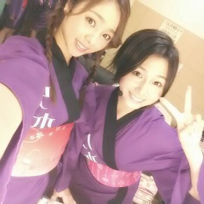
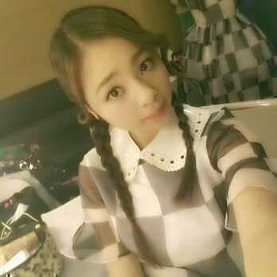
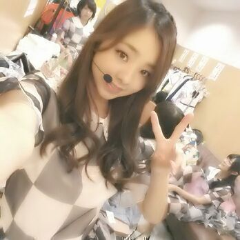

はいにゃ〜=^ω^=
皆さん おはよう )))
ろってぃ-だよぉ〜。
Zepp東京 昼 でも初のヘアスタイルに
挑戦してみました。
編み込みからのサイドで
フラワ〜ん(*´ω｀*)お花。
右手が気になる。
そして黒いのはマイクね/
ホクロぢゃないよ〜(о´∀`о)
夜公演では
ストレートのハーフツインをしたよ。
・・・・・・
札幌、福岡、大阪、名古屋ときて
昨日8/30が last☆東京公演でした。
来てくださった皆 )))
本っっっ間にありがとうございました！！
昼公演が始まった瞬間
会場の熱さに驚きました 笑あははん
メンバーも皆さんも
始まってすぐ汗びっしょりになってて
『うわぁ〜 liveしてんなっ(゜▽゜)』
って思いました ☆
そして、今回 真夏の全国ツアーに
携わってくれたスタッフの皆さん
本当にありがとうございました。
皆がてんぱってる時とかは
本当に色々と迷惑を
かけてしまったと思います。
ごめんなさい ！！
皆さんの支えがあって
最高のliveを作ることができました！
でも 自分の夢は Zeppではなく
もっともっと大きなところなので
満足はしていません★
来年は もっと大きな所で
ツアーをしたいです。
もっと いっぱいステージを
走りまわりたいです！！
いつも応援してくださっている
ファンの皆さん、スタッフの皆さん
家族、友達...の期待に応えれるように
頑張ります(゜▽゜)！！
下駄っぷパフォーマンス☆
れなりんと。

後、嬉しゅうことがありました！
卒業したけどずっと大切な
乃木坂46のメンバーの１人ゆみ姉が
応援に来てくれました☆
本当に嬉しかった(*´∀｀)
ゆみ姉が楽屋に来た瞬間
すごいメンバーに囲まれてて、
そこに埋もれて
ゆみ姉と色々話せなかったー(´；ω；｀)
次会うときはいっぱい話したい\(〃▽〃)/

ではでは またblog更新します♪
ばいばーーい のし。
